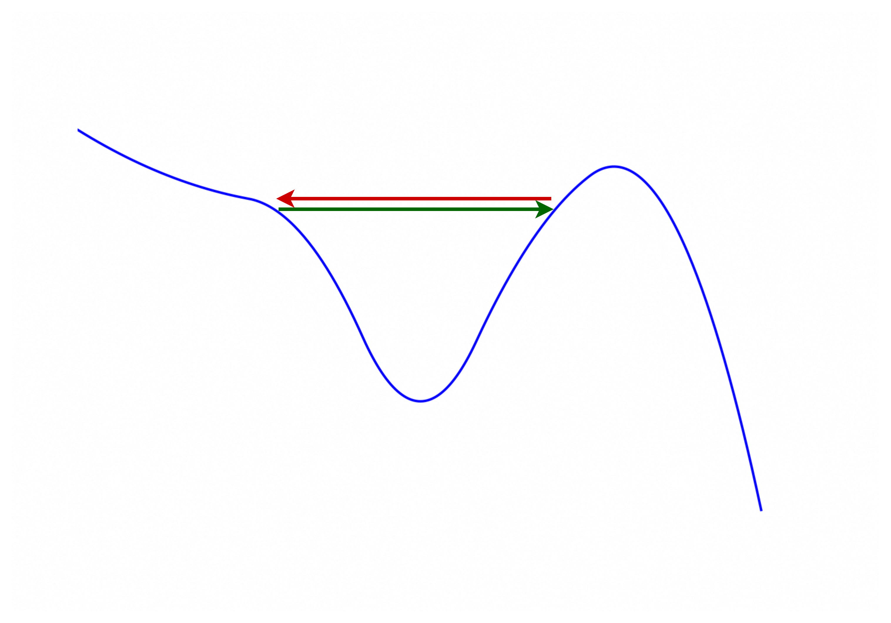

回归学习中，优化参数的大方针是梯度下降，但会面临各种挑战。这里简单记录原因与应对策略。
分类概览 (1)
Model Bias (2)
训练数据上$Loss$太大，可能是Model Bias引起的。注意这里的bias和前面的参数$b$ (bias) 完全不是同一个概念。
Model Bias是指模型没有弹性。就是说，即使穷举所有参数组合，结果都不好。“针”不在海里，不可能捞的到。
- 激活函数个数太少；
- 深度网络层数太少；
- 输入特征（input feature）太少，例如，只依靠$ios$来预测磁盘的$await$。
应对：让模型更有弹性。
梯度下降失败 (3)
针在海里，却捞不到。
Critical Point (3.1)
Critical Point（临界点） 是指损失函数的梯度为零的点，包括：
- 局部极小值（Local Minimum）
- 局部极大值（Local Maximum）
- 鞍点（Saddle Point）
判断与应对：
- Hessian 特征
- Hessian矩阵正定（positive definite），即所有特征值都大于0，则为Local Minimum;
- Hessian矩阵负定（negative definite），即所有特征值都小于0，则为Local Maximum;
- Hessian矩阵不定（indefinite），即同时存在正特征值和负特征值，则为Saddle Point；
- Momentum：想象一个有质量的小球在Error Surface上滚动。因为有质量，所以有动量（Momentum）和惯性，这样就能越过Critical Point，最终停在Global Minimum。
- 分Batch：见后文。
Rugged Error Surface (3.2)
损失曲面崎岖，可能出现：
- Loss不再下降
- 但梯度的norm（向量的长度）不是很小
可以想象，在峡谷两侧跳来跳去的。

图1: Rugged Error Surface
所以，应该减小$\eta$（learning rate）；但是$\eta$太小，在平坦的地方又无法进步。所以理想是，gradient小的时候，$\eta$自动变大；gradient大的时候，$\eta$自动变小。
应对：Adaptive learning rate。
Overfitting (4)
模型在训练数据上表现极好，但在未见过的测试数据上表现显著变差。有的类似与《数值分析》中，使用高次幂函数来做插值，虽然经过所有点（Loss为0），但中间跳动太大。原因可能是：
- 模型弹性太大（激活函数个数、层数太多）
- 训练数据太少
- 训练时间过长
- 特征过多/冗余，包含与目标无关的噪声特征
类比：只有3个点（训练数据少），但使用5次函数来拟合它。
应对：
- 增加训练数据；
- Data augmentation；例如，把图片左右反转；
- 降低模型弹性（constrained model）；例如目标是一个二次函数，使用五次函数做模型，训练数据太少（例如只有3个点），就可能出现overfitting；而使用二次函数模型，就会得到精确解。
- 减少参数
- 减少输入特征
- Early stopping (防止训练时间过长)
- Regularization
- Dropout